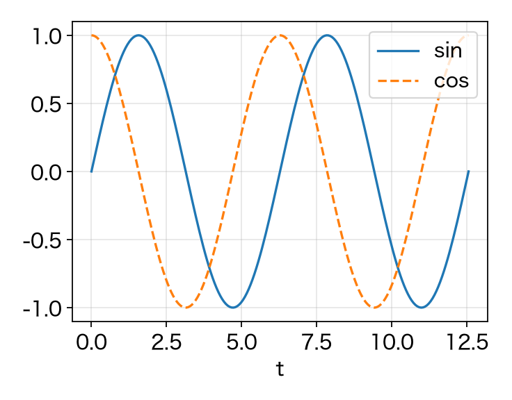
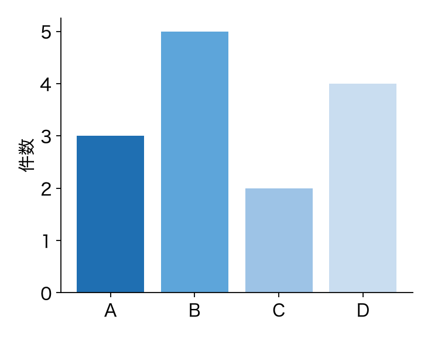

部品の見本
master-slide-fmt
HTML で書ける部品を 1 枚ずつ
HTML で書ける部品を 1 枚ずつ
本文・内容・要素
本文（p.lead）：その枚で一番大事なことを 1 文で
- 内容（ul.body > li）：本文の補足
- 要素（入れ子の li）：内容の詳細
- 良い面・利点（span.good）：意味のまとまりごとに色を付ける
- 悪い面・注意（span.bad）：単語 1 つだけには付けない
- 文中の式（ドル記号で囲んだ LaTeX）：$y = \Phi h + z$，$\sigma^2$，$N_{\rm T}$ は文字のまま
黒枠と番号つきの式
黒枠（div.box）と，番号つきの式（div.box.eqn）
黒枠：決めてほしいこと・定義・大事な一文を囲む
$\displaystyle \hat{x} = \arg\min_{x} \| y - A x \|^2 = \left( A^{\rm H} A \right)^{-1} A^{\rm H} y$(1)
- 分数・上下に範囲のある Σ・根号・行列・ハットは絵（パワポではパワポの数式）
- 番号はパワポでも右端にそろう
表と記号の表
表（table），列の多い表（table.tight），記号の表（table.sym）
| 手法 | 演算量 | 精度 | 備考 |
|---|---|---|---|
| 手法 A | $\mathcal{O}(N^3)$ | 高い | 遅い |
| 手法 B | $\mathcal{O}(N \log N)$ | 中くらい | 速い |
| $N$ | データの数 | $A$ | 観測の行列 | $\hat{x}$ | 推定値 |
図と注記
図（img.graph）は figs/ に置くと build が埋め込む

図の下の 1 行（p.cap）
小さい注記（p.cap.small）：条件や試行回数など
図を横に並べる
div.row の中に div.col を並べ，図名（p.figcap）を付ける
図 1 左の図

図 2 右の図
2 段組み
div.two の中に div を 2 つ置くと，左右に分かれる
- 左：箇条書き
- 条件や前提を並べる
右：黒枠や式
$\displaystyle \frac{a}{b} = 0.5$
$\displaystyle \frac{a}{b} = 0.5$
出典
本文では A [1] のように番号で引き，下端に短い出典を置く
- p.refs は脚注の帯のすぐ上に固定される
- 題名つきの全文は，最後の「参考文献」の枚にまとめる
[1] A. Author, Example Journal, vol. 1, no. 2, pp. 3–4, 2025. [2] B. Author, Example Conference, 2026.